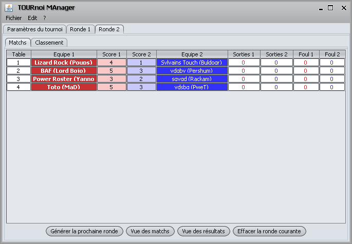

La saisie des matchs se fait dans l'onglet correspondant à la ronde et le sous-onglet "Matchs".

Les colonnes de score (Score1 et Score2), ainsi que les colonnes de
bonus (Sorties1, Sorties2, Foul1 et Foul2) sont éditables pour
la ronde en cours. Il n'est plus possible de modifier les
données d'une ronde passée (sauf en supprimant la ronde
courante).